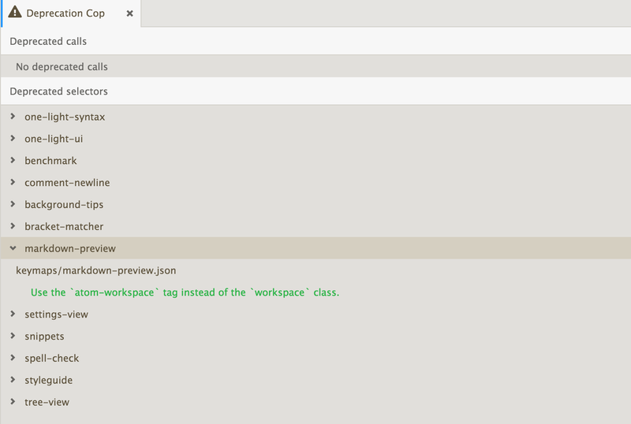

{
"dependencies": {
"atom-space-pen-views": "^2.0.3"
}
}-
Chapter 1: Getting Started
- 1.1 Why Atom?
- 1.2 Installing Atom
- 1.3 Atom Basics
- 1.4 Summary
-
Chapter 2: Using Atom
- 2.1 Atom Packages
- 2.2 Moving in Atom
- 2.3 Atom Selections
- 2.4 Editing and Deleting Text
- 2.5 Find and Replace
- 2.6 Snippets
- 2.7 Autocomplete
- 2.8 Folding
- 2.9 Panes
- 2.10 Grammar
- 2.11 Version Control in Atom
- 2.12 Writing in Atom
- 2.13 Basic Customization
- 2.14 Summary
-
Chapter 3: Hacking Atom
- 3.1 Tools of the Trade
- 3.2 The Init File
- 3.3 Package: Word Count
- 3.4 Package: Modifying Text
- 3.5 Creating a Theme
- 3.6 Iconography
- 3.7 Debugging
- 3.8 Writing specs
- 3.9 Converting from TextMate
- 3.10 Summary
5.1 Upgrading Your Package
Upgrading Your Package
This document will guide you through the large bits of upgrading your package to work with 1.0 APIs.
TL;DR
We’ve set deprecation messages and errors in strategic places to help make sure you don’t miss anything. You should be able to get 95% of the way to an updated package just by fixing errors and deprecations. There are a couple of things you can do to get the full effect of all the errors and deprecations.
Use atom-space-pen-views
If you use any class from require 'atom' with a $ or View in the name, add the atom-space-pen-views module to your package’s package.json file’s dependencies:
Then run apm install in your package directory.
Require views from atom-space-pen-views
Anywhere you are requiring one of the following from atom you need to require them from atom-space-pen-views instead.
# require these from 'atom-space-pen-views' rather than 'atom'
$
$$
$$$
View
TextEditorView
ScrollView
SelectListViewSo this:
# Old way
{$, TextEditorView, View, GitRepository} = require 'atom'Would be replaced by this:
# New way
{GitRepository} = require 'atom'
{$, TextEditorView, View} = require 'atom-space-pen-views'Run specs and test your package
You wrote specs, right!? Here’s where they shine. Run them with cmd-shift-P, and search for run package specs. It will show all the deprecation messages and errors.
Update the engines field in package.json
When you are deprecation free and all done converting, upgrade the engines field in your package.json:
{
"engines": {
"atom": ">=0.174.0 <2.0.0"
}
}Examples
We have upgraded all the core packages. Please see this issue for a link to all the upgrade PRs.
Deprecations
All of the methods in Atom core that have changes will emit deprecation messages when called. These messages are shown in two places: your package specs, and in Deprecation Cop.
Specs
Just run your specs, and all the deprecations will be displayed in yellow.

Figure 1. Deprecations in specs
Deprecation Cop
Run an atom window in dev mode (atom -d) with your package loaded, and open Deprecation Cop (search for deprecation in the command palette). Deprecated methods will be appear in Deprecation Cop only after they have been called.

Figure 2. Deprecation Cop
When deprecation cop is open, and deprecated methods are called, a Refresh button will appear in the top right of the Deprecation Cop interface. So exercise your package, then come back to Deprecation Cop and click the Refresh button.
Upgrading your Views
Previous to 1.0, views were baked into Atom core. These views were based on jQuery and space-pen. They looked something like this:
# The old way: getting views from atom
{$, TextEditorView, View} = require 'atom'
module.exports =
class SomeView extends View
@content: ->
@div class: 'find-and-replace', =>
@div class: 'block', =>
@subview 'myEditor', new TextEditorView(mini: true)
#...The New
require 'atom' no longer provides view helpers or jQuery. Atom core is now 'view agnostic'. The preexisting view system is available from a new npm package: atom-space-pen-views.
atom-space-pen-views now provides jQuery, space-pen views, and Atom specific views:
# These are now provided by atom-space-pen-views
$
$$
$$$
View
TextEditorView
ScrollView
SelectListViewAdding the module dependencies
To use the new views, you need to specify the atom-space-pen-views module in your package’s package.json file’s dependencies:
{
"dependencies": {
"atom-space-pen-views": "^2.0.3"
}
}space-pen bundles jQuery. If you do not need space-pen or any of the views, you can require jQuery directly.
{
"dependencies": {
"jquery": "^2"
}
}Converting your views
Sometimes it is as simple as converting the requires at the top of each view page. I assume you read the 'TL;DR' section and have updated all of your requires.
Upgrading classes extending any space-pen View
afterAttach and beforeRemove updated
The afterAttach and beforeRemove hooks have been replaced with
attached and detached and the semantics have changed.
afterAttach was called whenever the node was attached to another DOM node, even if that parent node wasn’t present in the DOM. afterAttach also was called with a boolean indicating whether or not the element and its parents were on the DOM. Now the attached hook is only called when the node and all of its parents are actually on the DOM, and is not called with a boolean.
beforeRemove was only called when $.fn.remove was called, which was typically used when the node was completely removed from the DOM. The new detached hook is called whenever the DOM node is detached, which could happen if the node is being detached for reattachment later. In short, if beforeRemove is called the node is never coming back. With detached it might be attached again later.
# Old way
{View} = require 'atom'
class MyView extends View
afterAttach: (onDom) ->
#...
beforeRemove: ->
#...# New way
{View} = require 'atom-space-pen-views'
class MyView extends View
attached: ->
# Always called with the equivalent of @afterAttach(true)!
#...
detached: ->
#...subscribe and subscribeToCommand methods removed
The subscribe and subscribeToCommand methods have been removed. See the Eventing and Disposables section for more info.
Upgrading to the new TextEditorView
All of the atom-specific methods available on the TextEditorView have been moved to the TextEditor, available via TextEditorView::getModel. See the TextEditorView docs and TextEditor docs for more info.
Upgrading classes extending ScrollView
The ScrollView has very minor changes.
You can no longer use @off to remove default behavior for core:move-up, core:move-down, etc.
# Old way to turn off default behavior
class ResultsView extends ScrollView
initialize: (@model) ->
super()
# turn off default scrolling behavior from ScrollView
@off 'core:move-up'
@off 'core:move-down'
@off 'core:move-left'
@off 'core:move-right'# New way to turn off default behavior
class ResultsView extends ScrollView
initialize: (@model) ->
disposable = super()
# turn off default scrolling behavior from ScrollView
disposable.dispose()-
Check out an example from find-and-replace.
-
See the docs for all the options.
Upgrading classes extending SelectListView
Your SelectListView might look something like this:
# Old!
class CommandPaletteView extends SelectListView
initialize: ->
super()
@addClass('command-palette overlay from-top')
atom.workspaceView.command 'command-palette:toggle', => @toggle()
confirmed: ({name, jQuery}) ->
@cancel()
# do something with the result
toggle: ->
if @hasParent()
@cancel()
else
@attach()
attach: ->
@storeFocusedElement()
items = [] # TODO: build items
@setItems(items)
atom.workspaceView.append(this)
@focusFilterEditor()
confirmed: ({name, jQuery}) ->
@cancel()This attaches and detaches itself from the dom when toggled, canceling magically detaches it from the DOM, and it uses the classes overlay and from-top.
The new SelectListView no longer automatically detaches itself from the DOM when cancelled. It’s up to you to implement whatever cancel behavior you want. Using the new APIs to mimic the semantics of the old class, it should look like this:
# New!
class CommandPaletteView extends SelectListView
initialize: ->
super()
# no more need for the `overlay` and `from-top` classes
@addClass('command-palette')
atom.commands.add 'atom-workspace', 'command-palette:toggle', => @toggle()
# You need to implement the `cancelled` method and hide.
cancelled: ->
@hide()
confirmed: ({name, jQuery}) ->
@cancel()
# do something with the result
toggle: ->
# Toggling now checks panel visibility,
# and hides / shows rather than attaching to / detaching from the DOM.
if @panel?.isVisible()
@cancel()
else
@show()
show: ->
# Now you will add your select list as a modal panel to the workspace
@panel ?= atom.workspace.addModalPanel(item: this)
@panel.show()
@storeFocusedElement()
items = [] # TODO: build items
@setItems(items)
@focusFilterEditor()
hide: ->
@panel?.hide()-
And check out the conversion of CommandPaletteView as a real-world example.
-
See the SelectListView docs for all options.
Using the model layer rather than the view layer
The API no longer exposes any specialized view objects or view classes. atom.workspaceView, and all the view classes: WorkspaceView, EditorView, PaneView, etc. have been globally deprecated.
Nearly all of the atom-specific actions performed by the old view objects can now be managed via the model layer. For example, here’s adding a panel to the interface using the atom.workspace model instead of the workspaceView:
# Old!
div = document.createElement('div')
atom.workspaceView.appendToTop(div)# New!
div = document.createElement('div')
atom.workspace.addTopPanel(item: div)For actions that still require the view, such as dispatching commands or munging css classes, you’ll access the view via the atom.views.getView() method. This will return a subclass of HTMLElement rather than a jQuery object or an instance of a deprecated view class (e.g. WorkspaceView).
# Old!
workspaceView = atom.workspaceView
editorView = workspaceView.getActiveEditorView()
paneView = editorView.getPaneView()# New!
# Generally, just use the models
workspace = atom.workspace
editor = workspace.getActiveTextEditor()
pane = editor.getPane()
# If you need views, get them with `getView`
workspaceElement = atom.views.getView(atom.workspace)
editorElement = atom.views.getView(editor)
paneElement = atom.views.getView(pane)Updating Specs
atom.workspaceView, the WorkspaceView class and the EditorView class have been deprecated. These two objects are used heavily throughout specs, mostly to dispatch events and commands. This section will explain how to remove them while still retaining the ability to dispatch events and commands.
Removing WorkspaceView references
WorkspaceView has been deprecated. Everything you could do on the view, you can now do on the Workspace model.
Requiring WorkspaceView from atom and accessing any methods on it will throw a deprecation warning. Many specs lean heavily on WorkspaceView to trigger commands and fetch EditorView objects.
Your specs might contain something like this:
# Old!
{WorkspaceView} = require 'atom'
describe 'FindView', ->
beforeEach ->
atom.workspaceView = new WorkspaceView()Instead, we will use the atom.views.getView() method. This will return a plain HTMLElement, not a WorkspaceView or jQuery object.
# New!
describe 'FindView', ->
workspaceElement = null
beforeEach ->
workspaceElement = atom.views.getView(atom.workspace)Attaching the workspace to the DOM
The workspace needs to be attached to the DOM in some cases. For example, view hooks only work (attached() on View, attachedCallback() on custom elements) when there is a descendant attached to the DOM.
You might see this in your specs:
# Old!
atom.workspaceView.attachToDom()Change it to:
# New!
jasmine.attachToDOM(workspaceElement)Removing EditorView references
Like WorkspaceView, EditorView has been deprecated. Everything you needed to do on the view you are now able to do on the TextEditor model.
In many cases, you will not even need to get the editor’s view anymore. Any of those instances should be updated to use the TextEditor instance instead. You should really only need the editor’s view when you plan on triggering a command on the view in a spec.
Your specs might contain something like this:
# Old!
describe 'Something', ->
[editorView] = []
beforeEach ->
editorView = atom.workspaceView.getActiveView()We’re going to use atom.views.getView() again to get the editor element. As in the case of the workspaceElement, getView will return a subclass of HTMLElement rather than an EditorView or jQuery object.
# New!
describe 'Something', ->
[editor, editorElement] = []
beforeEach ->
editor = atom.workspace.getActiveTextEditor()
editorElement = atom.views.getView(editor)Dispatching commands
Since the editorElement objects are no longer jQuery objects, they no longer support trigger(). Additionally, Atom has a new command dispatcher, atom.commands, that we use rather than commandeering jQuery’s trigger method.
From this:
# Old!
workspaceView.trigger 'a-package:toggle'
editorView.trigger 'find-and-replace:show'To this:
# New!
atom.commands.dispatch workspaceElement, 'a-package:toggle'
atom.commands.dispatch editorElement, 'find-and-replace:show'Eventing and Disposables
A couple large things changed with respect to events:
-
All model events are now exposed as event subscription methods that return
Disposableobjects -
The
subscribe()method is no longer available onspace-penViewobjects -
An Emitter is now provided from
require 'atom'
Consuming Events
All events from the Atom API are now methods that return a Disposable object, on which you can call dispose() to unsubscribe.
# Old!
editor.on 'changed', -># New!
disposable = editor.onDidChange ->
# You can unsubscribe at some point in the future via `dispose()`
disposable.dispose()Deprecation warnings will guide you toward the correct methods.
Using a CompositeDisposable
You can group multiple disposables into a single disposable with a CompositeDisposable.
{CompositeDisposable} = require 'atom'
class Something
constructor: ->
editor = atom.workspace.getActiveTextEditor()
@disposables = new CompositeDisposable
@disposables.add editor.onDidChange ->
@disposables.add editor.onDidChangePath ->
destroy: ->
@disposables.dispose()Removing View::subscribe and Subscriber::subscribe calls
There were a couple permutations of subscribe(). In these examples, a CompositeDisposable is used as it will commonly be useful where conversion is necessary.
subscribe(unsubscribable)
This one is very straight forward.
# Old!
@subscribe editor.on 'changed', -># New!
disposables = new CompositeDisposable
disposables.add editor.onDidChange ->subscribe(modelObject, event, method)
When the modelObject is an Atom model object, the change is very simple. Just use the correct event method, and add it to your CompositeDisposable.
# Old!
@subscribe editor, 'changed', -># New!
disposables = new CompositeDisposable
disposables.add editor.onDidChange ->subscribe(jQueryObject, selector(optional), event, method)
Things are a little more complicated when subscribing to a DOM or jQuery element. Atom no longer provides helpers for subscribing to elements. You can use jQuery or the native DOM APIs, whichever you prefer.
# Old!
@subscribe $(window), 'focus', -># New!
{Disposable, CompositeDisposable} = require 'atom'
disposables = new CompositeDisposable
# New with jQuery
focusCallback = ->
$(window).on 'focus', focusCallback
disposables.add new Disposable ->
$(window).off 'focus', focusCallback
# New with native APIs
focusCallback = ->
window.addEventListener 'focus', focusCallback
disposables.add new Disposable ->
window.removeEventListener 'focus', focusCallbackProviding Events: Using the Emitter
You no longer need to require emissary to get an emitter. We now provide an Emitter class from require 'atom'. We have a specific pattern for use of the Emitter. Rather than mixing it in, we instantiate a member variable, and create explicit subscription methods. For more information see the Emitter docs.
# New!
{Emitter} = require 'atom'
class Something
constructor: ->
@emitter = new Emitter
destroy: ->
@emitter.dispose()
onDidChange: (callback) ->
@emitter.on 'did-change', callback
methodThatFiresAChange: ->
@emitter.emit 'did-change', {data: 2}
# Using the evented class
something = new Something
something.onDidChange (eventObject) ->
console.log eventObject.data # => 2
something.methodThatFiresAChange()Subscribing To Commands
$.fn.command and View::subscribeToCommand are no longer available. Now we use atom.commands.add, and collect the results in a CompositeDisposable. See the docs for more info.
# Old!
atom.workspaceView.command 'core:close core:cancel', ->
# When inside a View class, you might see this
@subscribeToCommand 'core:close core:cancel', -># New!
@disposables.add atom.commands.add 'atom-workspace',
'core:close': ->
'core:cancel': ->
# You can register commands directly on individual DOM elements in addition to
# using selectors. When in a View class, you should have a `@element` object
# available. `@element` is a plain HTMLElement object
@disposables.add atom.commands.add @element,
'core:close': ->
'core:cancel': ->Upgrading your stylesheet’s selectors
Many selectors have changed, and we have introduced the Shadow DOM to the editor. See the Upgrading Your UI Theme And Package Selectors guide for more information in upgrading your package stylesheets.